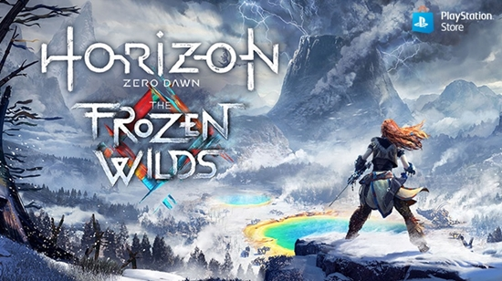

Насипте снігу цілий екран:
добірка ігор для зимового настрою
З настанням зими на вулицю хочеться виходити все рідше, але зануритися в зимову атмосферу все ж кортить,
особливо
якщо снігом на вулиці й не пахне. Декілька ігор, які б правильно налаштували ваш настрій на цей холодний період
часу.
Найкраще в зимі – це сніг, особливо можливість спостерігати за ним з теплої домівки. Немає нічого кращого в цю
пору року, ніж провести приємний вечір у компанії з гарячою чашкою какао та теплою ковдрою, поки на вулиці
розпочинається заметіль. Ще кращою компанією буде класна відеогра, що доповнить атмосферу зимової казки.
The Elder Scrolls V: Skyrim
Хіба можна було почати цю добірку з іншої гри? Аж ніяк, бо коли йдеться про ігри із зимовою атмосферою,
«Скайриму» просто
немає рівних. Гра, що за десять років свого існування
перевидавалася безліч разів, здатна
й
сьогодні дивувати неповторними сніжними краєвидами та комфортом, навіть у найбільш суворих локаціях.
Скайрим — провінція на самій півночі Тамріелю, тож клімат тут переважно холодний, а взимку погода неабияк
лютує. Упродовж своєї подорожі навідайтеся до вітряного Віндгельму — міста зі скрижанілим кам’яним муром,
де
панують сердиті хуртовини. Або ж завітайте до Вінтерголду, чаклунської столиці Скайриму, адже саме на цих
сніжних теренах розкинулася велична Колегія Вінтерголду — пристанок чарівників, що вивчають таємні
мистецтва.
Хоробрі й витривалі мандрівники знайдуть ще чимало викликів у засніжених лісах Скайриму чи височенних морозних
скелях, а після тривалої подорожі рушать до найближчої таверни пити мед і слухати байки коло вогню.
Horizon Zero Dawn: The Frozen Wilds

Світ гри Horizon спіткала
катастрофа, що повернула цивілізацію до племенного
способу життя, а Землю населила
жахливими роботичними тваринами. У цьому постапокаліпсисі головна героїня Елой шукає правду про істину будову
світу й власне родинне коріння. У доповненні The Frozen Wilds Елой мандрує на північ колишніх Сполучених
Штатів, коли дізнається про те, що там з’явилися нові небезпечні види машин.
Регіон Зарубка, куди потрапляє Елой, — це морозні дичавини, де панує суворий клімат. Тож будьте готові
продиратися крізь гори снігу й хуртовини, що запліплюватимуть героїню. Та підступні погодні умови — це ще
далеко не все, чим здатна випробувати вас гра. На північних теренах чигають ще загрозливіші роботичні хижаки,
як-от вогневовки, кригоікла та вогнеікла, які не дадуть вам замерзнути протягом подорожі. Натомість, окрім
низьких температур, доповнення до безмежно красивої гри подарує вам ще більше приголомшливих краєвидів, а
полярне сяйво в небі змусить зробити сотні скріншотів.
Rise of the Tomb Raider

За 25 років існування серії ігор Лара Крофт встигла побувати по всьому світу, знайти загублені
цивілізації та
магічні артефакти. Однак в перезапуску серії Tomb Raider молода розкрадачка
гробниць ще не така досвідчена, і в
Rise of the Tomb Raider вона вперше відправляється з експедицією до Сибіру.
В російській глушині Лара прагне віднайти загублене місто Кітеж, а разом із ним — секрет безсмертя. Впродовж
своєї непростої подорожі дівчина боротиметься не лише з ворогами, що очікуватимуть її на шляху, а й із
природою. Лавини, хуртовини та небезпечні ландшафти кидатимуть виклик на кожному кроці, тому Ларі доведеться
вміло користуватися всіма навичками та оснащенням. В її арсеналі є тихий та смертоносний лук, а також вже
канонічний льодоруб, що дозволить долати найкарколомніші шляхи. А щоби пристосуватися й вижити, будеться готові
полювати на дичину, збирати рідкісні ресурси й створювати з них зброю та корисні предмети.
Death Stranding
У
постапокаліптичній Америці люди оселилися в бункерах та поодиноких містах
за товстим муром, а зв’язки між
ними здатні налагодити лише героїчні кур’єри. Вони переносять пусткою цінні вантажі, обережно долаючи
підструпні гори та рівнини та ховаючись від ворожих угруповань.
У ролі Сема Бріджеса гравцю доведеться пройти крізь всю Північну Америку зі сходу на захід, та
найбільше
випробування чекатиме кур’єра у високих засніжених горах. Через високий покрив снігу та люту хурделицю
подолати
цю місцевість вкрай важко, а ще ж треба піклуватися про цілісність вантажу! Сему знадобиться
посилений
екзоскелет, витривалі чоботи, аби не обморозити ноги, та спеціальні рукавиці, які дозволять краще хапатися
за
поверхню. І, звісно, не варто забувати про каптур та накриття для вантажу, адже у цьому світі опади можуть
вбити вас та, що найгірше, знищити ваш вантаж.
нагору